1.5.1
그래프 개념 & 기본 용어 & 표현
- 그래프 기본 용어, 인접 행렬, 인접 리스트, 인접 다중리스트
그래프 개념 & 기본 용어 & 표현
- 그래프 정의
- 그래프 G = (V, E) : 공집합이 아닌 정점(vertex)들의 유한 집합 V 와, 두 정점의 쌍으로 이루어진 간선(edge)들의 유한 집합 E 로 이루어짐
- N:N 구조 (= 망, 네트워크)
- 그래프 단원 구성 : 기초(BASIC) · 연산(순회(탐색) – 너비 우선 BFS, 깊이 우선 DFS / 신장 트리) · 응용(MST 최소비용 신장 트리 – Kruskal, Prim / SP 최단 경로 / 작업 네트워크)
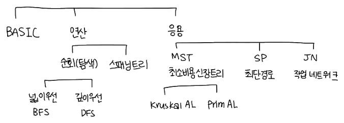
- 그래프 유형
- 무방향 그래프 : (V1, V2) = (V2, V1), 같은 간선
- (V1, V2) 가 E(G) 에 있는 간선이면 정점 V1, V2 는 인접하고, 간선 (V1, V2) 는 정점 V1, V2 에 부속된다
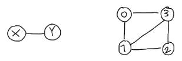
- (V1, V2) 가 E(G) 에 있는 간선이면 정점 V1, V2 는 인접하고, 간선 (V1, V2) 는 정점 V1, V2 에 부속된다
- 방향 그래프 : <V1, V2> ≠ <V2, V1>, 다른 간선 (V1 = 꼬리, V2 = 머리)
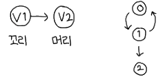
- 무방향 그래프 : (V1, V2) = (V2, V1), 같은 간선
- 기본 용어
- 인접 : (u, v) 가 E(G) 의 한 간선이면 u 와 v 는 인접 / <u, v> 이면 u 는 v 에 인접, v 는 u 로부터 인접
- 부속 : (u, v) 가 E(G) 의 한 간선이면, 간선 (u, v), <u, v> 는 정점 u 와 v 에 부속됨
- 완전 그래프 : G(V, E) 에서 그래프를 구성하는 모든 정점의 쌍 사이에 간선이 존재하는 그래프
- n 개의 정점을 가진 무방향 그래프 → 간선 수 n(n-1)/2
- n 개의 정점을 가진 방향 그래프 → 간선 수 n(n-1)
- 경로 : 임의의 정점 ~ 다른 정점에 이르는 길 (Vi ~ Vj 까지의 연속적인 순서)
- 단순 경로 : 중복되는 정점 X, 중복 방문 허용 X (한 경로 상에 있는 모든 정점들이 서로 다를 때)
- 사이클 : 처음과 마지막 정점이 같은 단순 경로
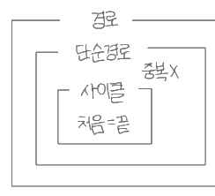
- 연결 그래프 : (무방향 그래프에서) 서로 다른 두 정점 Vi, Vj 가 연결된 그래프 = 모든 정점 간 경로가 존재 (↔ 단절 그래프, 비연결 그래프)
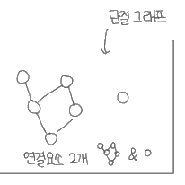
- 비순환 그래프 (트리 그래프) : 연결되고 사이클을 갖지 않는 그래프
- 인접 행렬 (Adjacency matrix)
- 정점이 n 개이면 n × n 행렬 (n ≥ 1), T[i][j]
- 무방향 그래프 → 대칭 / 방향 그래프 → 대칭이 아닐 수 있음
- 행의 1의 개수 = 그 정점의 차수 (방향 그래프 : 행의 합 = 진출 차수, 열의 합 = 진입 차수)
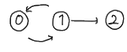
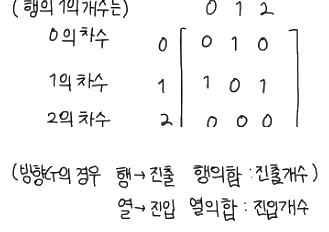
- 장점 : 임의의 두 정점 사이에 간선이 존재하는지 쉽게 알 수 있음, 정점의 차수를 쉽게 계산 가능
- 단점 : 그래프 내에 존재하는 간선 수 계산, 그 그래프가 연결 그래프인가의 문제 해결에 시간이 오래 걸림
- 방향 그래프를 인접 행렬로 표현할 때
- 행 : 출발 정점, 열 : 도착 정점
- if 가중치 X 방향 그래프 → 0, 1로만 단순히 표현
- if 가중치 O 방향 그래프 → 간선의 가중치 값 표현
- 인접 리스트 (linked list)
- 간선 중심 순차 표현 : 포인터가 아닌 리스트의 노드를 순차적으로 묶어 배열로 저장하는 방식
- 정점 i 에 인접한 정점 → vertex[vertex[i]], … , vertex[vertex[i+1]-1] (0 ≤ i < n)
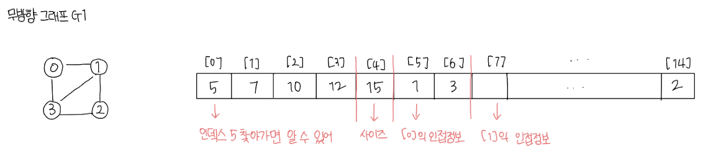
- 정점 i 에 인접한 정점 → vertex[vertex[i]], … , vertex[vertex[i+1]-1] (0 ≤ i < n)
- 연결 리스트로 구현한 인접 리스트
- 각 리스트들은 그래프를 구성하는 임의의 정점에서 인접한 정점으로 신속하게 접근할 수 있도록 순차적으로 번호 부여
- 임의의 정점에서 자신의 인접 리스트로 쉽게 접근할 수 있는 포인터용 배열 기능을 제공하는 헤드 노드를 가짐
- 방향 그래프의 경우 하나의 인접 리스트에 속한 노드들의 수 = 그 정점의 진출 차수
- 역인접 리스트 : 진입으로 정의, 정점의 진입 차수를 쉽게 알 수 있음
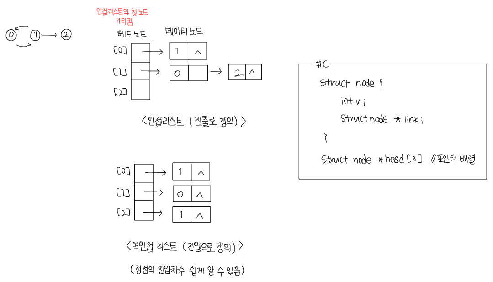
- 인접 다중 리스트
- 간선이 두 번 조사되는 일이 없도록 하나의 비트인 마크 필드 M 을 사용 (부가적 기억 장소 요구됨)
- 노드 구조 : 방문 여부(marked) | vertex1 | vertex2 | vertex1 에 대한 link | vertex2 에 대한 link
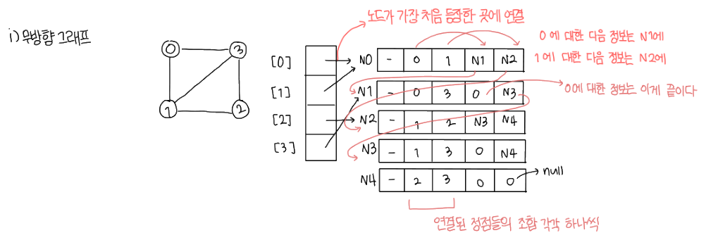
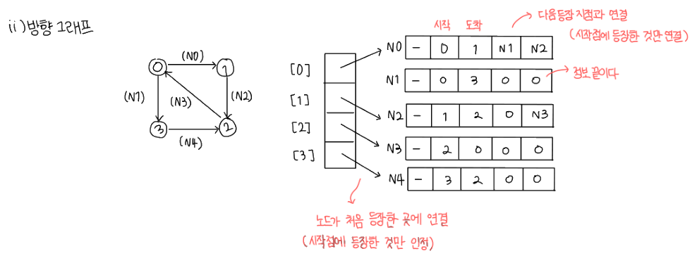
- 간선 중심 순차 표현 : 포인터가 아닌 리스트의 노드를 순차적으로 묶어 배열로 저장하는 방식
- 2009 기출 – 인접 행렬로 표현한 그래프 분석
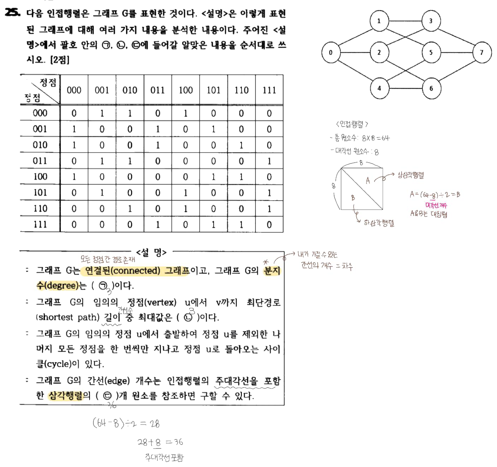


![최단 경로 알고리즘 정리도. 단일 출발점 최단 경로(1차원 배열): Dijkstra 알고리즘(≒ LSA(OSPF) 링크 상태 AL, 하나의 정점 ~ 모든 다른 정점까지의 최단 경로, 경유를 통해 최단 경로 구하기, 음의 가중치가 있으면 경유지점을 골라놓았는데 나중에 등장한 음의 가중치로 최소 경유 지점이 달라질 수 있어 경로 구할 수 X, 갈망법(greedy) 사용, 수행 시간 O(n²) / 최적 O(E log₂V))와 Bellman-Ford 알고리즘(≒ DVA(RIP) 거리 벡터 AL, n-1 개 정점까지 hop 수 따지기, 음의 가중치·일반 가중치 허용(but 음의 사이클 X), 동적 프로그래밍(동적 계획법) 사용, 수행 시간 O(n³) / 최적 O(E·V)). 모든 출발점 최단 경로(2차원 배열, 모든 쌍에 대한 최단 경로): Floyd 알고리즘. 가중치 인접 행렬은 간선이 없으면 ∞ 로 씀(가중치가 0 일 수도 있어서, 컴퓨터에서는 무한대가 없어 상당히 큰 값을 그 의미로 사용).](1-5-3-fig-3.png)
![cost[i][j] = 0 (정점 i = 정점 j), weight (정점 i와 정점 j 사이에 인접 경로가 존재), ∞ (정점 i와 정점 j 사이에 인접 경로가 존재하지 X)](1-5-3-fig-4.png)

![void BellmanFord(int n, int v) 코드 9줄: 2~3줄 dist[i] = length[v][i] 로 초기화, 4줄 k = 2 부터 n-1 까지, 5줄 u != v 이고 진입 간선이 있는 u 마다, 6줄 그래프의 각 간선 <i, u> 에 대해, 7~8줄 dist[u] > dist[i] + length[i][u] 이면 dist[u] = dist[i] + length[i][u]](1-5-3-fig-13.png)